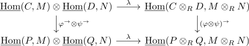

inner hom tensor map is a chain homotopy equivalence
Proposition
Let $C,D,M,N$ be chain complexes of \(R\)-modules for $R$ a noetherian hereditary ring. Assume furthermore that
- $C,D$ are degreewise projective
- $H(C),H(D)$ are bounded below
- $M,N$ are bounded above
- $H(C), M$ are degreewise finitely generated
Then the inner hom tensor map
is a chain homotopy equivalence
Proof
reduction 1
using
- quasi isomorphism for a degreewise finitely generated chain complex over a noetherian hereditary ring
- quasi isomorphism for a bounded chain complex over a hereditary ring
we get quasi-isomorphisms
As quasi isomorphism between chain complexes of projectives are chain homotopy equivalences and the hom chain complex preserves chain homotopies we conclude that $\varphi^{ \rightarrow}, \psi^{ \rightarrow}, (\varphi \otimes \psi)^{ \rightarrow}$ are all chain homotopy equivalences (cf. tensor hom adjunction of chain complexes, right adjoint as left exact functor, left exact functor as additive functor, additive functor preserves chain homotopies)
Therefore looking at

<commutes>
it suffices to show that the bottom $\lambda$ is a chain homotopy equivalence (cf. two out of three for chain homotopy equivalences), as for example $(\varphi \otimes \psi)^{ \rightarrow} \circ \lambda$ is a chain homotopy equivalence as composition of chain homotopy equivalences
Therefore it suffices to show that
is an isomorphism for $P,Q$ projective modules and $P,M$ finitely generated
using projective object as direct summand of sufficiently large enough projective object we get
- $P$ as direct summand of $R^m$ for $m < \infty$ since $P$ is finitely generated
- $Q$ as direct summand of $R[Y]$ for some set $Y$
Since retract of an isomorphism as isomorphism
i tis enough to show that
is an isomorphism
Since $m < \infty$ we conclude that $\lambda$ is a direct sum of maps
unravelling the definitions results in
using inner hom of bounded above and bounded below chain complexes as bounded below chain complex we conclude that
is a finite product and thus a biproduct showing
reindexing to gives
Similarly the codomain is given by